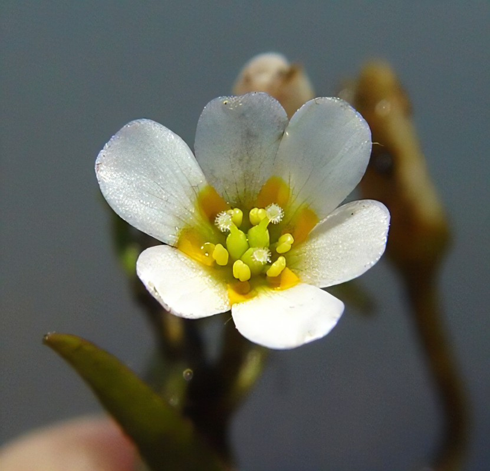
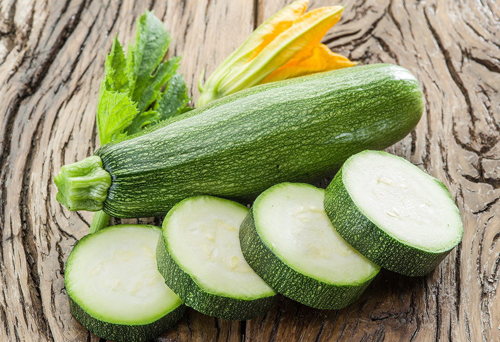
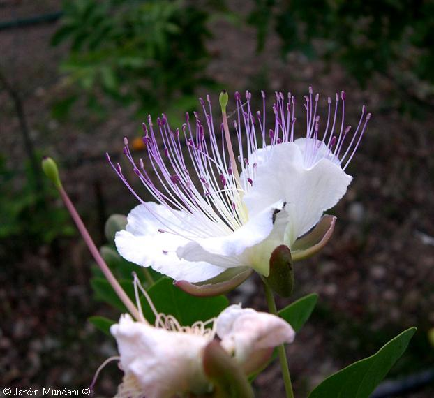

Órgãos Reprodutivos das Angiospermas
Evolução e Morfoanatomia funcional
Evolução e Morfoanatomia funcional
Morfoanatomia
é o estudo da forma e da estrutura dos organismos vivos, bem como das relações entre as diferentes partes do corpo. Ela está relacionada com a morfologia interna (anatomia) e externa (organografia).
Níveis de organização
a morfoanatomia pode ser estudada em diferentes níveis de organização, desde as células e tecidos até os sistemas de órgãos e a organização do corpo como um todo.
Morfoanatomia funcional
é uma abordagem que permite compreender como a estrutura dos organismos está relacionada com suas funções biológicas.
Perspectiva evolutiva da morfoanatomia funcional
compreende o entendimento sobre como a diversidade de formas e estruturas dos organismos evoluiu ao longo do tempo, e como diferentes espécies se adaptaram a diferentes ambientes e modos de vida.
Angiospermas
O fechamento dos carpelos

Radiação adaptativa
A diversificação das angiospermas foi impulsionada por várias adaptações morfológicas e fisiológicas, incluindo:
Surgimento do carpelo
Dupla fecundação

Flores e frutos


Flor
As primeiras flores eram muito simples
com apenas alguns órgãos reprodutivos básicos, como carpelos, estames e tépalas
Grado ANA: Amborellales | Nymphaeales | Austrobaileyales

Gradualmente, foram se tornando mais complexas e sofisticadas
desenvolvendo uma variedade de estruturas especializadas que permitiam a reprodução mais eficiente
Polinização: Cantarofilia | Melitofilia | Ornitofilia | Quiropterofilia | Anemofilia

Flores actinomórficas são generalistas...

...as assimétricas, especializadas
Uma típica flor é composta por pedicelo, receptáculo, sépalas, pétalas, estames e carpelos
Carpelo (ou pistilo)
Ovário

Rudimento seminal
Estilete e Estigma
Ovário
Posição
Súpero
Flor hipógina
Flor perígina
Ínfero
Flor epígina
Flor epígina com hipanto desenvolvido
Estipitado

Rudimento seminal
Desenvolvimento e posição
Átropo/Ortótropo
Anátropo
Campilótropo
Placentação
Placentação apical
Placentação basal
Placentação axilar
Placentação marginal

Placentação parietal
Placentação central (ou livre)
Estilete
Curto x Longo

Heterostilia
Ramificado
Estilódio
Estigma
Estame
brevistilo e longistilo